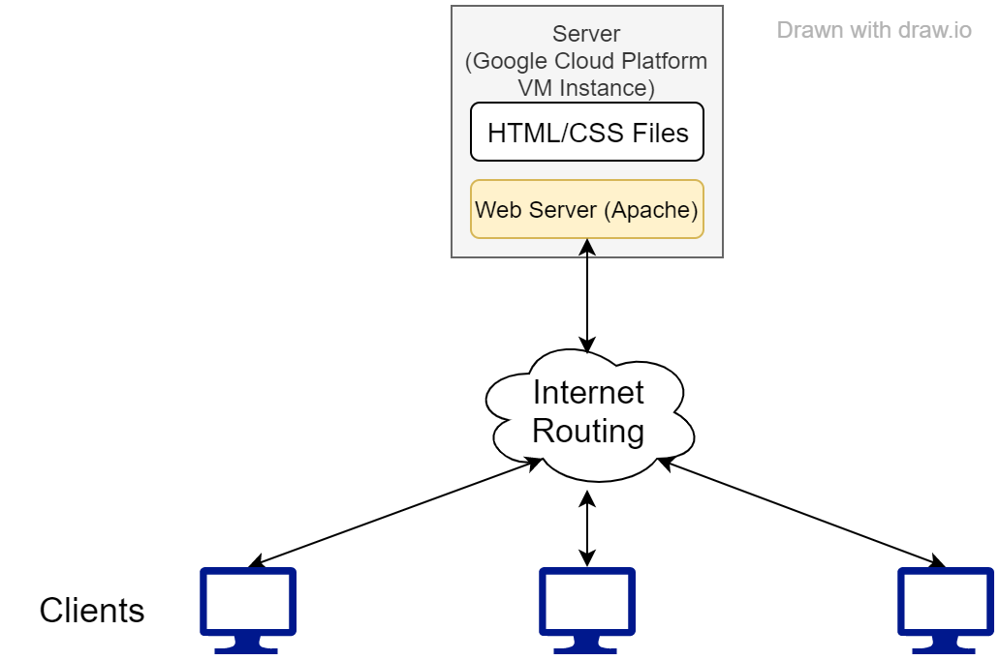

Creating your Own Website from Scratch
January 7, 2020
Note that there are easy ways to make a website. If all you need is a couple of pages, you should just use Squarespace.
Of course, I only needed a couple of pages, but for whatever reason I was compelled to do everything myself. This entails:
- Buying/managing a domain name
- Hosting the content (which could include the Apache web server)
- Actually writing up HTML and CSS
- For fancy things on the client side, writing JS
- For fancy things on the server side, using any one of a HUGE list of available pieces of software. Traditionally, this is PHP with a mySQL database.
This article only deals with the first two items, after a brief refresher on how websites work.
How Websites Work
First, check out this diagram. Each of the three icons on the bottom represents a computer accessing the web. The gray box at the top represents a computer that serves a website. The arrows represent the flow of messages between two points.
In general, when a client accesses a website, web requests are sent to a specific computer via the internet. This computer is referred to as a server. For my website, the server is a computer that I rent from Google.
All web requests arriving at the server computer go through the web server software. My web server software is the Apache program. It is the web server software that decides what to send back to the clients. On many websites (including this one) the web server software is configured to send back files that are stored on the server's hard drive.
Right-click on this page and select "View page source". On some web browsers, you can also hit CTRL-U. This will show you the actual code that I (lovingly) typed into the files on my server. Apache is sending these files back to your computer as plain text; it is your web browser that presents them as nice web pages.
Getting a Domain Name
A domain name is the name of a website that you type into your browser. This website's domain name is mmerlini.ca. As it turns out, when your computer sends messages over the internet, they do not use domain names; in fact, they use IP addresses. Domain names are for the benefit of human beings who can't easily remember long strings of numbers.
To draw an analogy, a computer's IP address is like a person's phone number. You need to know the person's phone number to actually call them, but usually you only remember their name. If you don't know a person's number, you can look it up in the phonebook or browse a list of contacts on your phone.
In the context of the internet, the phone book is called the Domain Name System (DNS). When you want to make your own website, you essentially want to add a new DNS entry that maps your desired domain name to the IP address of your server.
Buying a Domain Name
This is where things get complicated. Basically, there is an organization out there called the IANA (Internet Assigned Numbers Authority) who manage a number of so-called DNS root servers. You can see the list here. When you go to a website, your web browser will first look up the domain name by sending a query to one of these machines;
You may think this is a chicken-and-egg situation. To convert a domain to an IP address, I have to get the IP address for a root server. And how do I do that? I have to look up its domain name.
This is why the root servers must have "well-known" IP addresses. If you didn't already know the IP address, there would be no way you could get it.
Just to let you know: Google manages its own DNS name resolver at IP address 8.8.8.8. Although Google probably uses this DNS server to track what websites people go to, it's a lot easier to remember this IP address than the official ones.
Another pro tip: you can often use your internet router as a DNS resolver. This is usually the better way to go because the router will in turn ask your ISP, who caches most common domain names.